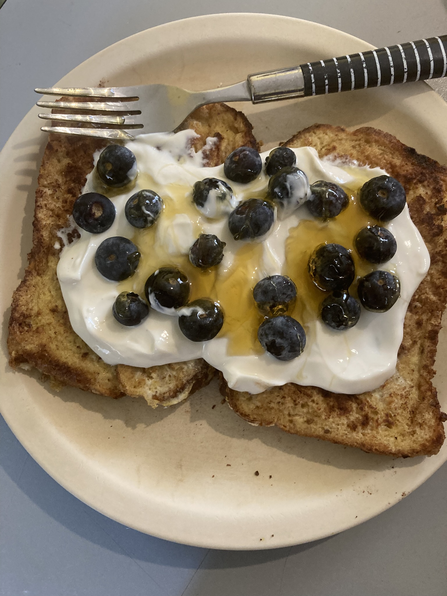

French Toast
A nice way to start your day with a little bit of everything
and a nice source of protein

A nicely cooked and healthy breakfast idea
INGREDIENTS
- 2 pieces of whole bread
- 1 regular egg
- 100 gr of Greek Yogurt
- 1 teaspoon of cinnamon powder
- 15 gr of butter
- 1 bowl of blueberries
- 1 tablespoon of honey
Steps
- Break the egg into a bowl and start stirring with the cinnamon powder
- Once is even, add the two pieces of bread and cover both sides with the mix
- Heat a pan in low heat and put the bread to start cooking for 5 minutes
- After the egg is cooked serve in a regular plate and cover it with the yogurt
- FInally add the blueberries and the honey on top